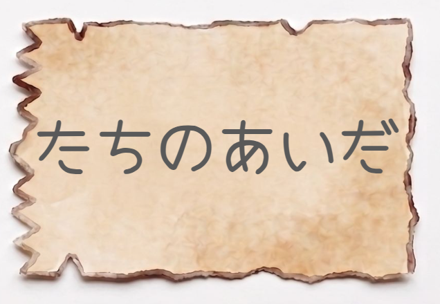
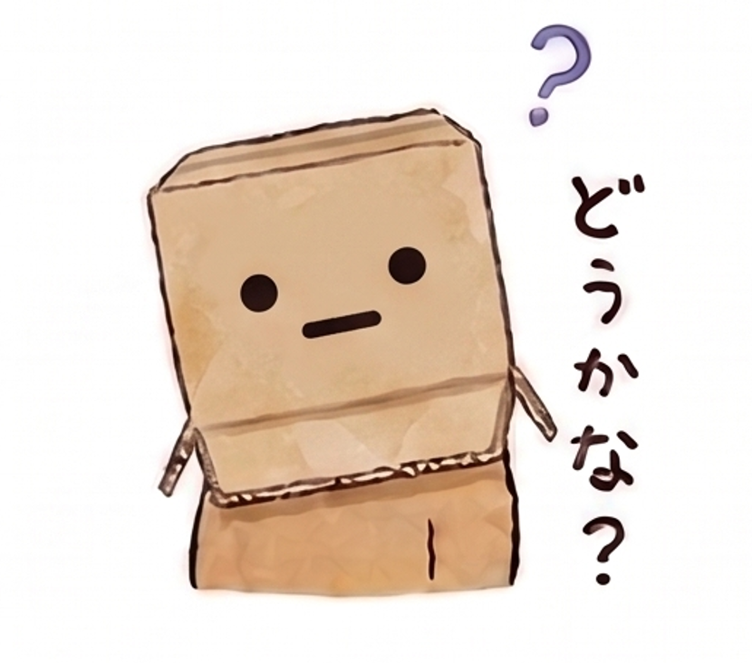

今日の予定
📍 12:46｜盛岡到着＆身軽にチェンジ！
魅惑の美食都市、盛岡に上陸デス！まずは今夜の拠点（メトロポリタン盛岡ニューウィング）に荷物を預けて、身軽な状態にトランスフォームしマス。駅チカの最強拠点デス！
🚶♂️ 13:00〜14:00｜お腹を空かせるための腹ごなし散歩
最高のランチを迎えるために、あえて焦らして盛岡の街を少し歩きマス！清らかな中津川のせせらぎを聞きながら歩くもヨシ、「開運橋」から岩手山の絶景を眺めるもヨシ。さあ、胃袋の準備運動デス！
🍜 14:00〜15:30｜究極の選択！冷麺＆焼肉ランチ
【A：ぴょんぴょん舎 盛岡駅前店】
王道にして至高！果物の甘みが溶け込んだフルーティーで奥深いスープに、ツルツル・シコシコの手打ち麺が絡む絶品冷麺！焼肉と一緒に頬張れば、お口の中が幸せのテーマパークに大変身デス！
【B：盛楼閣（せいろうかく）】
地元民からも愛されまくる名店！牛の旨味がガツンと効いた濃厚スープと、噛み応え抜群の太麺がたまりまセン！極上の焼肉の脂を、冷たくてピリ辛な冷麺のスープで流し込む……あぁ、想像しただけでワタシの冷却ファンがフル回転デス！
🏨 16:00｜ホテルチェックイン＆作戦会議
ふかふかのベッドにダイブしつつ、夕方の過ごし方を選んでくだサイ！
🌇 夕方の部：どう過ごす？
【A：エモい街並みでお散歩＆写真撮影会📸】
まるでタイムスリップ！国の重要文化財「岩手銀行赤レンガ館」など、大正ロマンあふれるノスタルジックな洋館を巡るルート。美しい街並みを背景に、お二人の素敵な笑顔をたくさんカメラに収めてくだサイ！
【B：ローカルスーパー探検＆カフェでまったり☕️】
おしゃれなカフェでコーヒーブレイクした後は、地元のスーパーに潜入！夜のお部屋での宴に向けて、ご当地ならではの見たことないレアな面白おつまみを発掘する宝探しミッションデス！
🍻 夜の宴｜盛岡の夜に乾杯！
【A：かっこ 盛岡駅前店】
新鮮な海鮮やアツアツの焼き鳥で、冷たいビールをグビッ！活気あふれる空間で、今日一日の楽しかった思い出を語り合いながら、最高の夜を満喫してくだサイ！
【B：岩手郷土酒場 和み屋】
これぞディープな岩手！三陸の海の幸や、地元ならではの郷土料理を地酒と一緒にしっぽり味わう大人の時間。岩手ならではの美味データ、ワタシのデータベースにドシドシ送信よろしくお願いしマス！
暇つぶしの謎

※答えは朝の手紙の解答用紙に書いてね！
